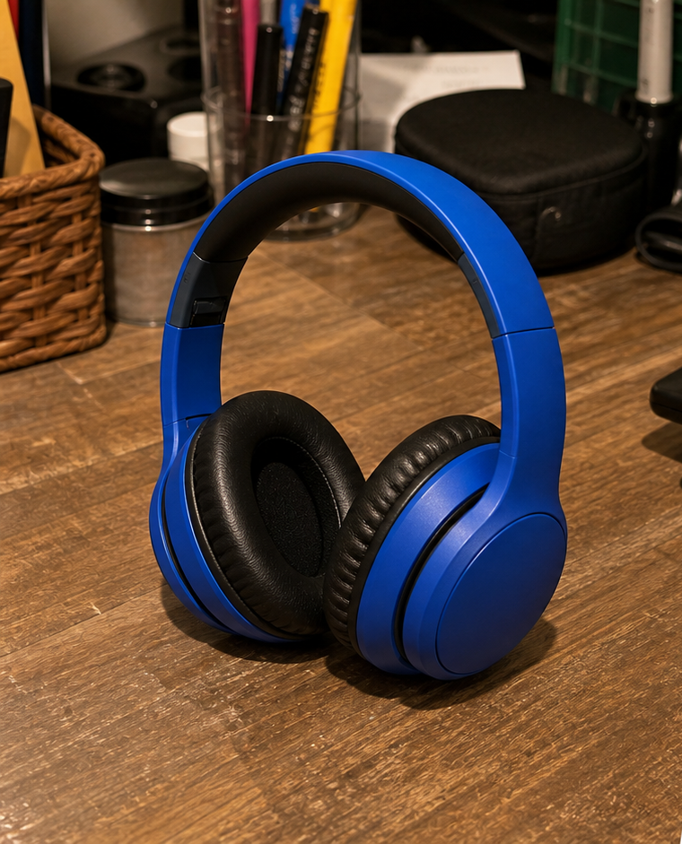

Crie imagens mais consistentes para páginas de produto, variantes e coleções.
Teste real no produto
Da foto original ao PNG transparente
Esta é a mesma foto antes e depois de ser processada no BatchCutout. O ficheiro da direita é o PNG transparente descarregado pela ferramenta.
Foto original

PNG descarregado
Fluxo gravado
Veja o processamento acontecer
A gravação mostra a página real: seleção da foto, remoção do fundo, pré-visualização do resultado e download do PNG. Não existe uma linha animada nem uma troca simulada entre duas imagens prontas. Os períodos sem ação foram removidos e os trechos de espera foram acelerados 2x.
- Uma única foto desde o upload até ao download.
- Processamento executado no navegador.
- Resultado disponível como PNG transparente.
O que foi validado
Um recorte útil para reutilizar a foto
O fundo da secretária foi removido e o produto ficou isolado. O PNG pode ser colocado num fundo branco, numa cor da marca ou numa composição de marketplace.
- Teste 2 imagens próprias sem conta nem cartão.
- Inspecione os contornos e o interior do produto.
- Só compre créditos depois de validar o resultado.
Prepare PNGs transparentes para adaptar fundos, banners e composições por canal.
Descarregue o lote num ZIP para entregar, rever ou carregar no backoffice.
A foto de entrada, o PNG descarregado e a gravação do fluxo estão publicados nesta página.
Teste decisivo
Confirme a qualidade com as suas próprias fotos
O exemplo demonstra o fluxo, mas o teste mais fiável é usar dois produtos representativos do seu catálogo. Não é necessário criar conta nem introduzir cartão.